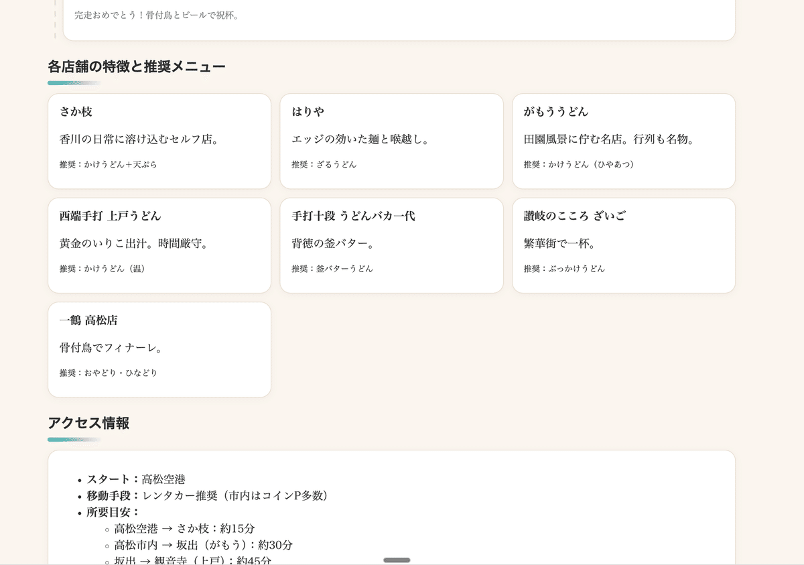
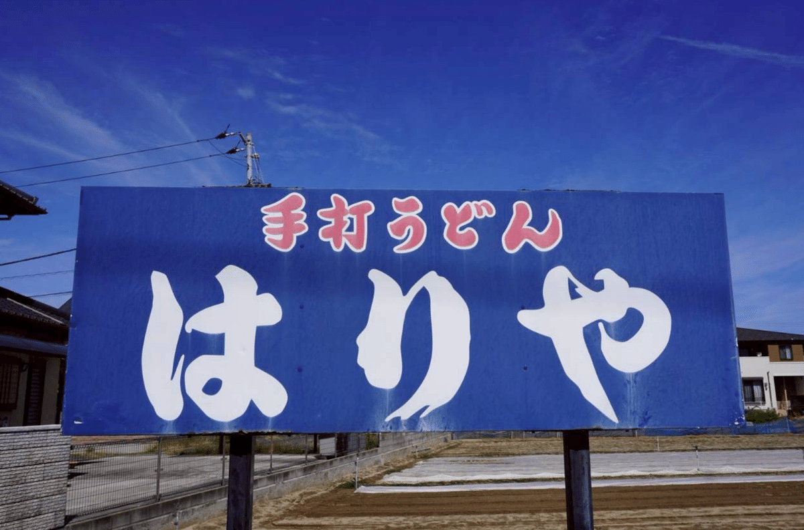
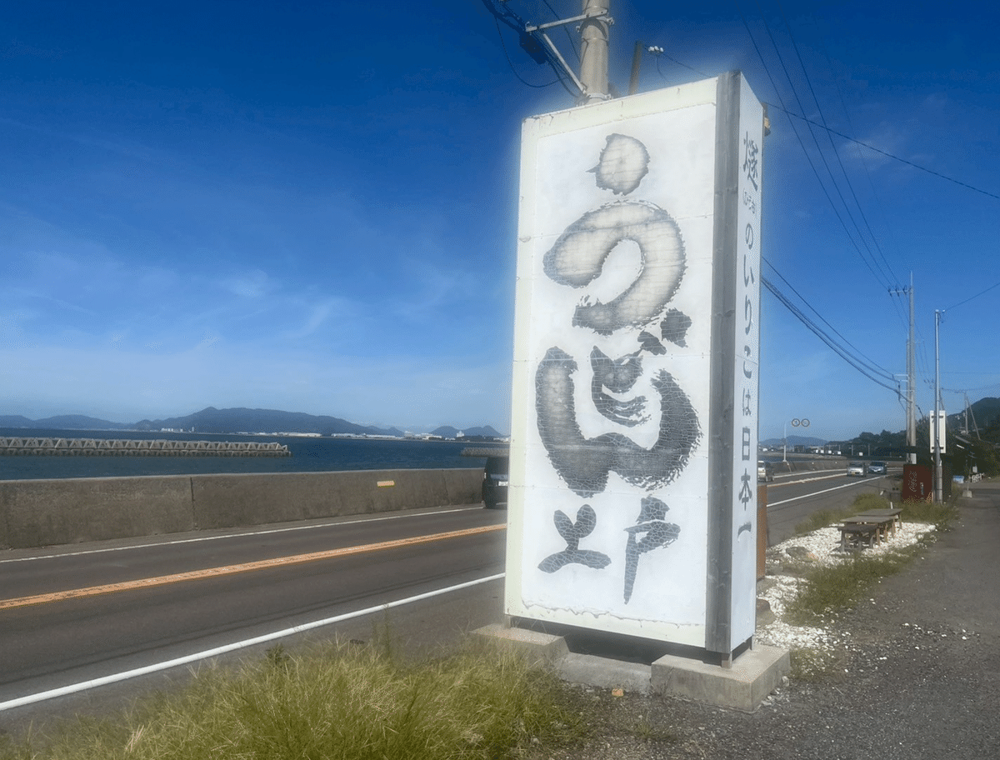
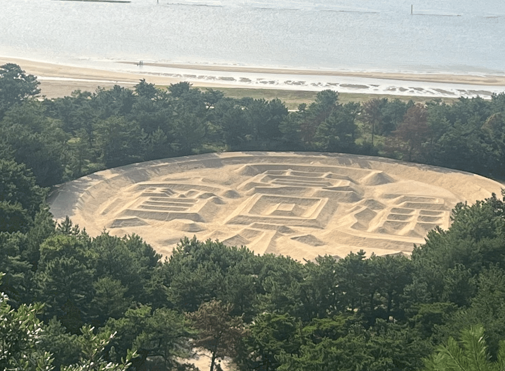
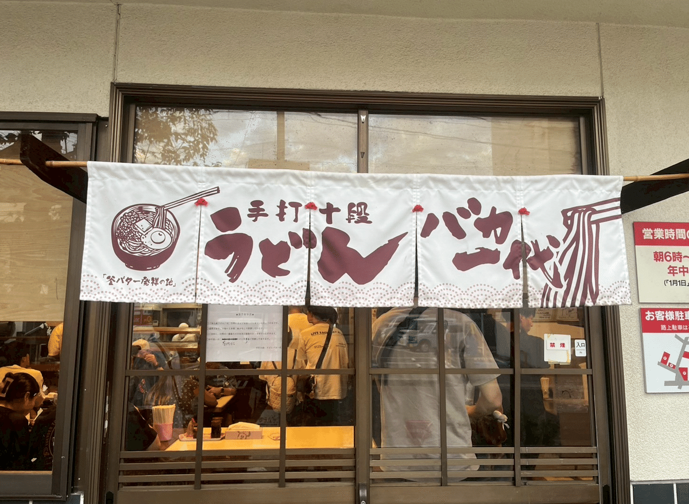
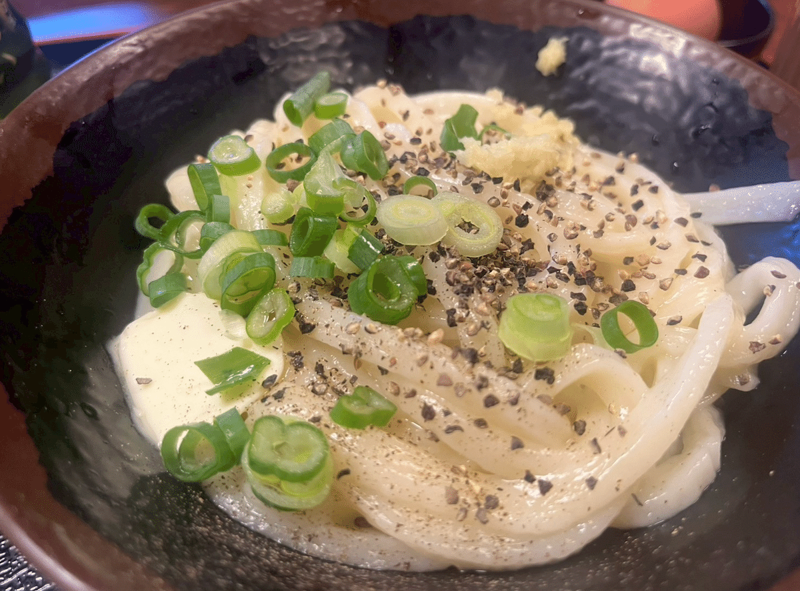
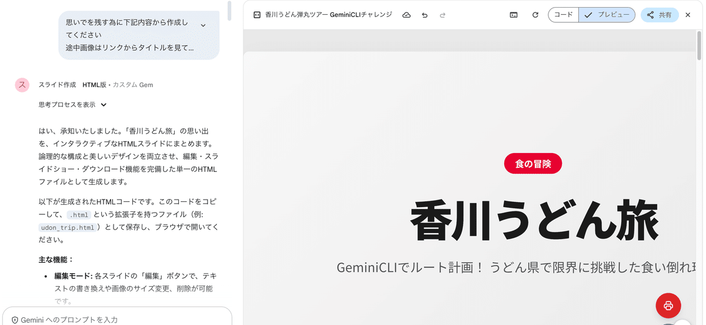

はじめに：AIで旅行が変わる時代
旅行計画って、意外と時間がかかりませんか？どこに行くか、どの順番で回るか、どんなルートが効率的か...。そんな悩みをGoogle AIサービスで一気に解決した実体験をお話しします。
今回の舞台は香川県。私が過去に50店舗以上巡った讃岐うどんの名店を、今回は友人と一緒に効率よく回るためにGeminiをフル活用しました。
なぜGoogle AIを選んだのか？旅行計画の新常識
従来の旅行計画といえば：
ガイドブックを読み漁る
SNSで情報収集
ブログを片っ端から調べる
でもGoogle AIなら：
膨大なデータを瞬時に分析
最適なルートを自動提案
リアルタイムの店舗情報をチェック
旅のしおりまで自動作成
時間短縮効果は驚くほどでした。従来なら数時間かかる作業が、なんと数分で完了したんです。
実践編：Google AIサービスを使った5つのステップ
STEP1：Google Mapの活用術 - 過去の財産をデジタル化
まず私のGoogleMap上の香川県は光輝いています。なぜなら、過去の出張時代に訪れたうどん屋がすべて保存されているから。
 GoogleMapで香川県のうどん店がマーキングされた画面
GoogleMapで香川県のうどん店がマーキングされた画面
GoogleMapの場所保存機能は旅行者の最強ツール。お気に入りのリストを作成し、星評価やメモを残すことで、自分だけのグルメマップが完成します。
※今回はこのデータをCSV形式でダウンロード。こちらの記事が詳しく参考にしました。もちろん、Web上のおすすめ店を列挙して使用しても構いません。
 GoogleMapからエクスポートしたCSVファイルをGeminiCLIで列挙
GoogleMapからエクスポートしたCSVファイルをGeminiCLIで列挙
STEP2：Gemini CLIでコース最適化 - AIの真骨頂
ここからがGeminiの出番です。データを読み込ませ、以下の条件で最適コースを提案してもらいました：
Geminiへの指示内容：
1日で効率よく回れるコース設計
各店舗の営業状況確認
移動時間を考慮したスケジュール作成
代替店舗の提案
 Gemini CLIでコース提案を受けている画面
Gemini CLIでコース提案を受けている画面
5つのコース案を提案してもらった中で、最終的に選んだのは、私にとって外せない東西の名店を組み込んだコースでした。
Geminiと何度も対話を重ねながら、あれこれ検討していくうちに、自分にとって一番しっくりくる最適なコースを決めることができました。
STEP3：HTMLマップ作成 - 視覚的な旅行ガイド
選定したコースをもとに、Geminiに依頼してHTMLファイルを作成。Google Maps APIと連携した、インタラクティブなマップが完成しました。
 作成されたHTMLマップの表示画面
作成されたHTMLマップの表示画面
[作成されたHTMLマップ]
このマップの素晴らしいところは：
ワンクリックでGoogle Mapsアプリが起動
各店舗の詳細情報が表示
ルート案内が自動で開始
 HTMLマップからクリックでGoogleMapが起動
HTMLマップからクリックでGoogleMapが起動
STEP4：AI生成の旅のしおり - プロ級の仕上がり
Geminiで作成した旅のしおりには、タイムスケジュールや各店舗の特徴とおすすめメニュー、さらに店名をクリックすればGoogleマップが起動するアクセス情報まで盛り込まれています。
また、Step3にはプラスして注意点なども加えられており、旅の流れを把握するだけでなく、細かな配慮まで行き届いた内容になっています。
旅のしおり Map以外の情報を記載
旅のしおりリンク（ChatGPTリンク）：

実際の旅行レポート：AIプランを現実で検証
1軒目：はりや - キング オブ 讃岐うどん
つるシコの麺とかしわ天、イカ天が最高。AIが提案した通り、朝一番で訪問したことで行列を避けることができました。
はりやのうどん看板
 かしわざるうどん
かしわざるうどん
2軒目：上戸 - 海を眺めながらの絶品いりこ出汁
いりこ出汁の黄金スープが絶品。海沿いの駅に隣接し、景色も最高でした。Geminiが「景色も楽しめる」と提案していた理由がよく分かりました。
上戸うどん看板と海の景色
 いりこ出汁の黄金スープ
いりこ出汁の黄金スープ
3軒目：大多喜 - 釜揚げうどんの真髄
コシのある最高の麺とつけ汁。すこし濃いめのつゆにつけながら味わううどん。お母さんの明るい人柄に癒されました。
 大多喜うどん店構え
大多喜うどん店構え
 大多喜の釜揚げうどん
大多喜の釜揚げうどん
観光スポット：銭形砂絵 - AIが提案した息抜きタイム
うどんばかりもう入らんと、近くの観光スポットをみることに。銭形砂絵で歴史に触れる時間は、旅にメリハリを与えてくれました。
銭形砂絵の全景写真
4軒目：うどんバカ一代 - 背徳のカロリー爆弾
釜玉バターうどん。最高カロリーの背徳感とバターの香りが最高でした！
うどんバカ一代のれん
釜玉バターうどん
想定外のハプニングとAIの対応力
もちろん、完璧な計画でも想定外は起きます：
行列で時間ロス → Geminiが提案していた代替店舗リストが大活躍
道を間違える → Google Maps のリアルタイムナビで即座に修正
東西の距離に苦戦 → 事前のAI計算が甘く、人間の判断で調整
最終的に回れたのは4店舗でしたが、バックアップ計画のおかげで充実した旅になりました。
STEP5：思い出をBookに - 旅行の新しい締めくくり
旅行の後、Geminiで思い出ブックを作成しました。簡単な指示をするだけで、プロ仕様のフォトブックデザインが完成します。私が行ったことは、載せたい写真を選び、画像管理サービス（Postimageを使用）にアップロードすることだけです。
Geminiに写真を反映させるには、URL経由で指定する必要があります。Postimageではアップロード後に写真のURLを取得できるので、それぞれの写真にタイトルを付け、タイトルとURLをペアにしてGeminiへの指示に含めるのがコツです。
 GeminiCanvasを利用してフォトブックの作成指示
GeminiCanvasを利用してフォトブックの作成指示
完成したフォトブック：
さらに、以前作っておいた「キーワードを渡すと資料を自動で作成してくれるGem」も試しに活用してみました。旅行に関連する思い出や体験を表すキーワードをいくつか投げてみたところ、あっという間に整理された素晴らしい資料が完成。まるで旅行記やアルバムの解説文のような仕上がりで、写真ブックとあわせて振り返ると一層楽しめる内容になりました。
このように、写真だけでなく文章によるまとめも自動で生成できるので、旅の思い出を多角的に残すことができて大変便利です。Geminiと組み合わせることで、写真のビジュアルとテキストによる記録が一体となった「自分だけの旅行記」を作れるのが魅力だと感じました。
Geminiの資料作成Gemを利用して資料作成指示
完成した思い出資料：
PDFファイル：
従来であれば、
写真の選別に約2時間
レイアウト作成に約3時間
文章作成に約2時間
など、合計で7時間ほどかかっていましたが、Geminiを活用すると、これらすべての工程をまとめて スマホだけで30分以内 で完了。
写真選びから仕上がりまで一気に進められるので、作業の効率は驚くほど向上しました。
Google AIサービス活用のメリット・デメリット
メリット
圧倒的な時間短縮
従来なら数時間かかる作業が、AIを使うことで数分で完了。業務効率が大幅に向上します。最新情報の取得
リアルタイムで営業状況や最新のデータを確認でき、常にアップデートされた情報をもとに判断できます。多角的な提案
人間では思いつかないような視点やアイデアを提示してくれるため、企画や資料作成の幅が広がります。継続的な改善
学習機能により、使い続けるほどに精度が向上し、より自分に合った結果を得られるようになります。
デメリット
最終判断は人間が必要
AIの提案はあくまで参考。鵜呑みにせず、最終的な意思決定には人間のチェックが欠かせません。地域特性の理解不足
AIはローカルな事情や文化的なニュアンスを十分に理解できないことがあるため、人間の知見で補う必要があります。
旅行業界の未来予想：AI時代の新常識
今回の体験で感じたのは、**「帰るまでが遠足」から「記録するまでが旅行」**への変化です。
今後、私たちの旅行体験をより豊かにしてくれるサービスとして、さまざまな可能性が期待されています。
たとえば NotebookLM を活用すれば、旅の出来事を自動的にまとめ上げてくれる「旅行記生成」が実現できるでしょう。写真や日記を整理する手間がなく、旅の記録が物語のように形になります。
さらに Google Vids では、旅の思い出を映像としてまとめる「思い出ムービー作成」が可能になります。自動編集によって、撮影した写真や動画が感動的なストーリーに仕上がり、家族や友人と簡単に共有できます。
そして Gemini を通じては、旅行中のリアルタイム相談が大きな魅力です。行き先のおすすめ、現地の最新情報、食事や観光スポットの提案まで、その場でサポートしてくれる“旅のパートナー”として頼れる存在になるでしょう。
これらのサービスが組み合わさることで、旅行は「計画から記録・共有まで」より直感的で楽しい体験へと進化していくと考えられます。
まとめ：Google AIで旅行は「体験」から「創造」へ
Google AIサービスを活用することで：
計画時間を90%以上短縮
より多くの選択肢を検討可能
旅行後の記録作業も効率化
新しい発見や体験に時間を集中
重要なのは、AIを使いこなすことで、人間にしかできない「感動」や「発見」により多くの時間を使えるようになることです。
次回の旅行では、あなたもGoogle AIを相棒に、新しい旅のスタイルを体験してみませんか？
この記事で紹介したサービス
Google Map（場所保存・ルート検索）
GeminiCLI（旅行計画・コンテンツ作成）
Gemini（フォトブック、資料作成）
最後まで読んでいただき、ありがとうございました！
この記事が少しでも皆さんの旅行計画のお役に立てれば幸いです＾＾